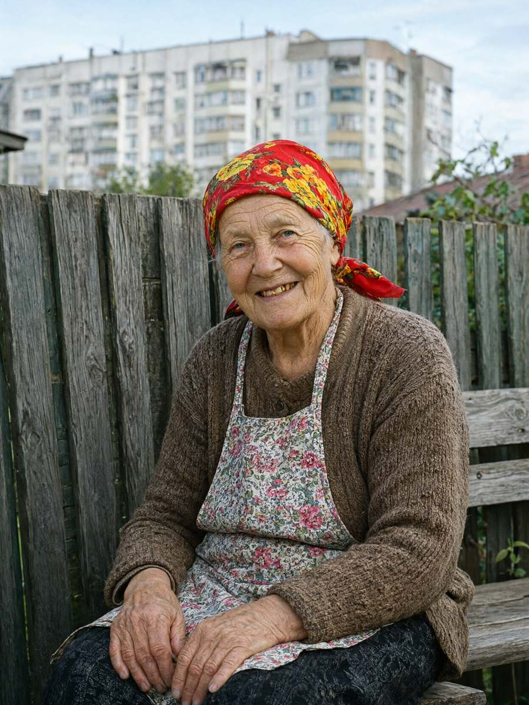

м. Івано-Франківськ, 16 жовтня 2026 року, 12:30–13:25
Місце: вул. Пасічна, 41-А, кухня житлового будинку
Пояснення відібрав: майор поліції Волков Д.С., старший слідчий в ОВС СУ ГУНП в Івано-Франківській області, у кримінальному провадженні № 12026090010002417.
Особа, що дає пояснення: Яковишин Світлана Петрівна, 02.08.1947 р.н., пенсіонерка (колишня кухарка шкільної їдальні), вдова. Проживає: м. Івано-Франківськ, вул. Пасічна, 41-А. Тел. +380 97 118 30 47.
Роз'яснення прав. Роз'яснено, що відповідно до ст. 63 Конституції України особа не зобов'язана давати пояснення щодо себе, членів своєї сім'ї та близьких родичів; пояснення дається добровільно.
Пояснення записано зі слів; особливості мовлення збережено на прохання особи («пишіть, як я кажу, бо то буде не я»).
Питання: Розкажіть, як ви виявили тіло.
Ади, як було. Я встаю о пів на сьому, бо кури. Взяла відро з зерном, іду до курника — а коло тої діри в паркані щось сіре лежить. Думаю: знов Маланюк мені своє сміття через паркан кинув. Підходжу — а то Василько. В пальті своїм файному, сірому, лицем у землю. Я його кличу: «Васильку, вставай, кава вистигне». А він не встає. [плаче] Я до хати, по той телефон з кнопками, сто два набрала. Руки трусилися так, що двічі «сто три» вийшло, на швидку.
Питання: Коли ви востаннє бачили Палійчука Василя Івановича живим?
Вчора зранку. О сьомій, може, чверть на восьму. Як завжди: дві кави з його кав'ярні, що в першій секції. Мені — з молоком і двома цукрами, бо я гірке не п'ю, а йому — чорну, як його фірма. Посиділи на лавці коло воріт, побалакали про погоду і про Маланюка, і він пішов на роботу. П'ять років так. Хоч дощ, хоч сніг — дві кави.
Питання: Увечері 15 жовтня Палійчук до вас приходив?
Ні. Ввечері не був. Він лиш зранку кавуню носить. Ввечері в нього свої справи, він ґазда великий.
Питання: Що ви робили ввечері й уночі?
Спала. З десятої. Як убита. Мене ще покійний чоловік казав: «Світо, тебе й Страшний суд не збудить, хіба як труба буде з курником поруч».
Питання: Собака вночі гавкав?
Бровко? Та він все життя гавкає. На кота, на Маланюка, на місяць. Я його вже років десять не чую, як годинник на стіні.
Питання: Від вашої літньої кухні сильно пахне брагою. Там теплий бак із трубкою. Що це?
То компот!
Питання: Патрульним ви сказали, що то тісто підходить.
Ну то і тісто теж. Я жінка господарна, в мене все разом підходить. А що компот через трубку — то в вас у місті не капає, а в нас капає. Ви, Дмитре Сергійовичу, краще пишіть, що я кажу, а не що вам носом здається.
Питання: Розкажіть про свою родину. Хто проживає з вами?
Онук, Сашко. А як він туво взявся — то довго, але я скажу, бо ви ж однаково не відчепитеся. Донька моя, Олена, їдина, поїхала в Італію, в Неаполь, у дев'яносто дев'ятому році. Бо тут тоді в школі зарплату не платили, нам раз макаронами видали — ще й італійськими, сміх і гріх. Вона писала листи до дві тисячі другого. Прислала їдну фотографію: немовля, Сашко, народився на Покрову дві тисячі першого. На фото лисий, як усі діти, і кричить. А потім — нічо. Я писала, і в посольство їздила, і до ворожки в Тисменицю — нічо. Двадцять чотири роки нічо.
А цього серпня — стук у хвіртку: «Бабо, я Сашко, Оленин». Восьмого серпня, через тиждень після мого дня народження — як подарунок. Мені аж ноги віднялися. Його до мене привели добрі люди з «Родини», з фонду, вони й пиріжки возять, і в церкву мене возили. Вони його шукали, бо Олена, каже, померла цього літа і перед смертю сказала шукати бабусю. [плаче] Не дожила я її побачити. Зате дитина є.
Питання: Ви бачили документи онука?
А нащо мені його документи? Я що, паспортний стіл? Паспорт він загубив, як їхав, бідний, відновлює там через консульство. В нього очі Оленині. І по-італійськи говорить: «нонна», каже, і «грація». Файно так.
Питання: Чи є люди, з якими у вас конфлікти?
Стефурак. Забудовник той — хату хоче, гад, а я не продам — мене звідси тільки на Дем'янів Лаз, до діда. Там мій дід лежить, якого я не знала, з сорок першого року. То куди я від нього піду? А Стефурак мені квартиру пропонував, трикімнатну, на дев'ятому поверсі. Я що, курей на дев'ятий поверх ліфтом возитиму?
І Маланюк. Голова того їхнього ОСББ — гад, на мене в міськраду пише. І на курей, і на Бровка, і на мою грушу — що листя на їхній майданчик падає. Як груша може не падати листям, я його питаю? Він військовий, то думає, що й груша мусить по команді.
Питання: Яким був Палійчук? Чи мав ворогів?
Василько золотий, щоранку дві кави, ми пили на лавці. Він батькову хату продав, отам, де тепер третя секція стоїть, — то, видно, совість гризла, то й носив. Я йому казала: «Васильку, ти мені нічо не винен». А він: «Бабо Світо, пийте каву, бо вистигне». Ворогів? Та хто на такого руку підніме? Хіба Маланюк — через машину, що він не там ставить. Але Маланюк тільки пише. Він як руку підніме, то хіба щоб скаргу написати.
Питання: Ваш онук уночі виходив із хати?
Спав. Він же дитина. Не чіпайте мені його.
Питання: Ви знаєте, хто я?
Дімка! Та я тебе з моєї черешні віником зганяла! Ти малий був, а Василько старший, то Василько тебе підсаджував, а сам перший тікав, а ти в кропиву падав. Черешня всохла, як навколо бетон залили. А ти тепер майор. Майор — а черешні мені винен. (Слідчий визнає: винен.)
Знайдіть того гада, Дімо. Бо я сама знайду, і тоді вам буде ще більше роботи.
Зі слів записано вірно, мною прочитано. окулярів не маю, читала Сашкові
Примітка слідчого: пояснення зачитано вголос слідчим; власноручну приписку зроблено гр. Яковишин С.П.